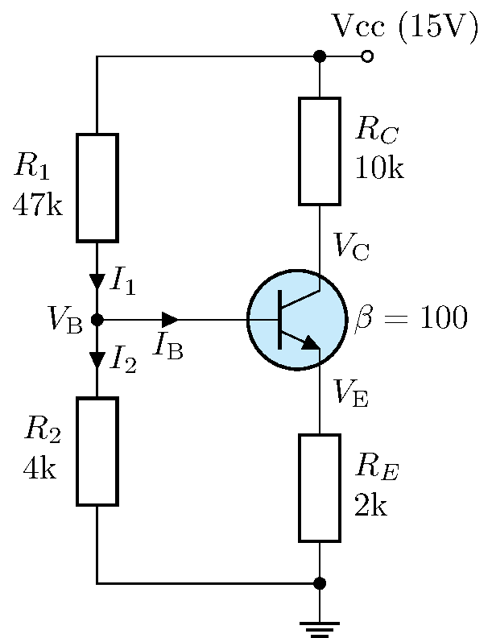
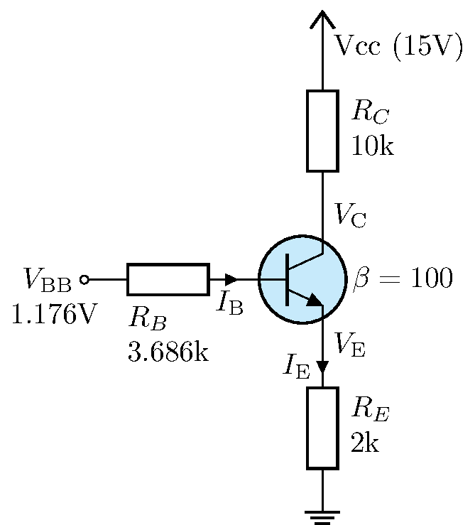
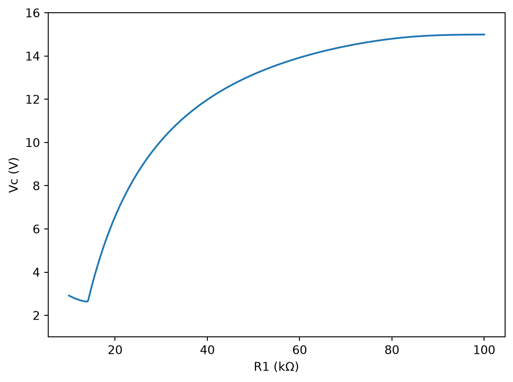
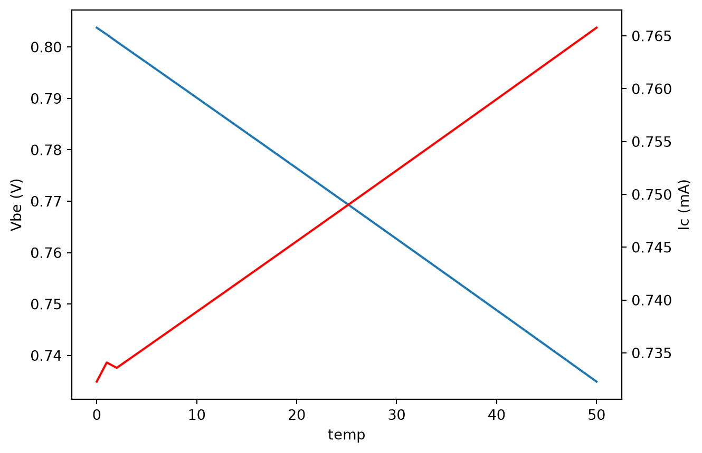
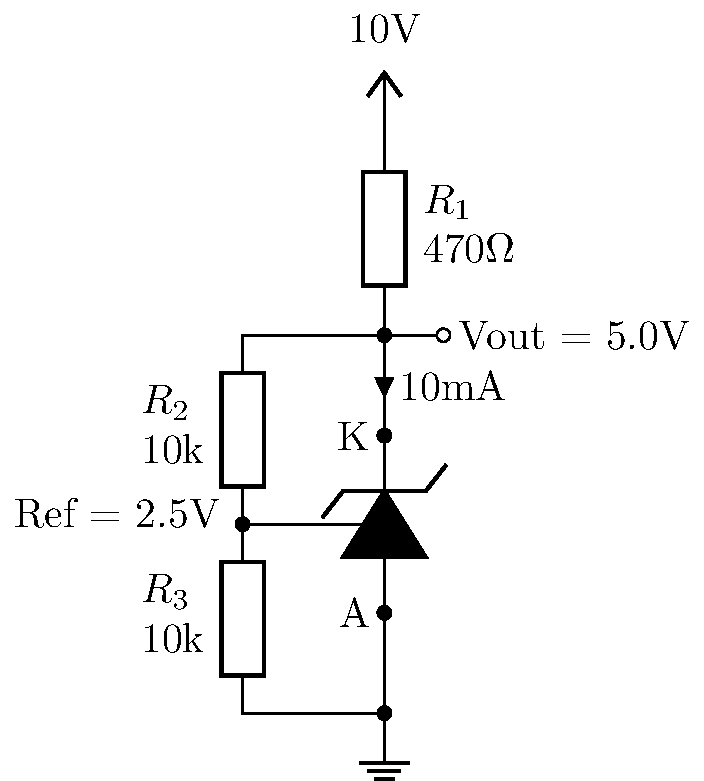
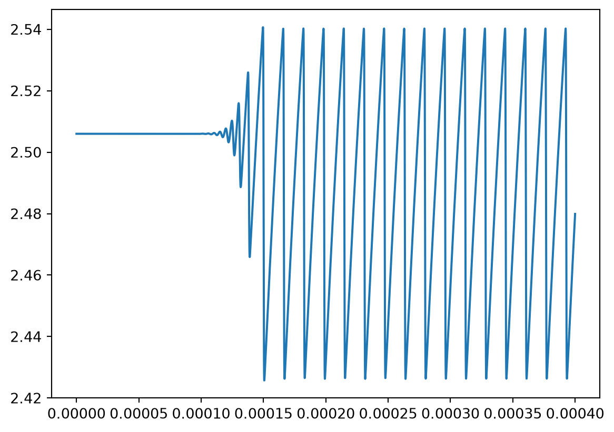
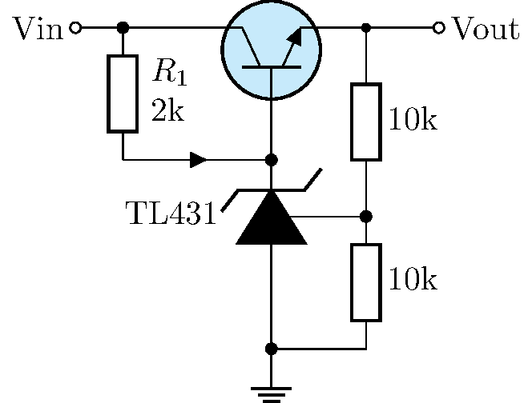
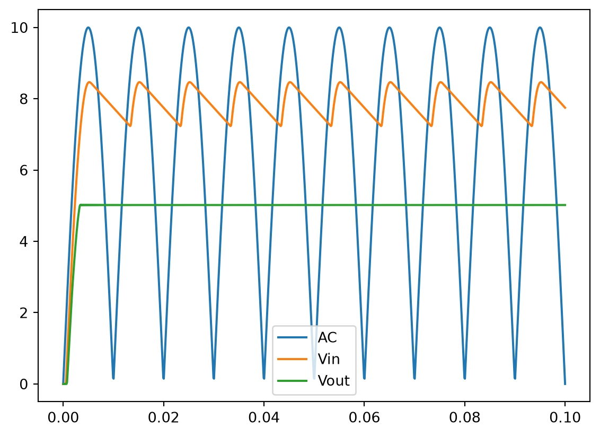

%matplotlib inline
import matplotlib.pyplot as plt
import numpy as np7 Circuit simulation using ngspice in python jupyter
By Shuo Chen (chenshuo_at_chenshuo.com)
Latest notebook: https://github.com/chenshuo/notes/blob/master/notebooks/AnalogCircuits.ipynb
Blog post about why I like this over GUI tool (LTspice): http://blog.chenshuo.com/2024/02/ngspice-python-jupyter.html
# ngspice binding
# pip install git+https://github.com/ignamv/ngspyce.git
import ngspyce as ngERROR:ngspyce.sharedspice:Warning: can't find the initialization file spinit.# Circuitikz
# pip install git+https://github.com/mkrphys/ipython-tikzmagic.git
%load_ext tikzmagicdef para(r1, r2):
return (r1*r2) / (r1 + r2)
def print_op(print_base_current=True, print_emitter_current=False):
op = ng.operating_point()
for k in sorted(op.keys()):
if k[0] == '@' or '#branch' in k:
if '[is]' in k:
continue
if '[ib]' in k and not print_base_current:
continue
if '[ie]' in k and not print_emitter_current:
continue
print('%10s = %8.2f uA' % (k, 1e6*op[k][0]))
else:
print('%10s = %8.2f mV' % (k, 1e3*op[k][0]))ng.circ('''
V1 vcc 0 15
R1 vcc b 47k
R2 b 0 4k
''')
ng.operating_point(){'v1#branch': array([-0.00029412]),
'b': array([1.17647059]),
'vcc': array([15.])}print(ng.vector_names())['v1#branch', 'b', 'vcc']print(ng.vectors()){'v1#branch': array([-0.00029412]), 'b': array([1.17647059]), 'vcc': array([15.])}Vb = ng.vector('b')
print(Vb)[1.17647059]Vcc = 15
Vbb = 4 / (4 + 47) * Vcc
print(Vbb)1.1764705882352942print(Vbb - Vb[0])-2.220446049250313e-168 Setting Q-point of basic CE amplifier
%%tikz -p circuitikz -s 400,500
\ctikzset{european resistors, transistors/arrow pos=end, transistors/fill=cyan!20}
\newcommand{\ui}[1]{\ensuremath{I_\mathrm{#1}}}
\newcommand{\uv}[1]{\ensuremath{V_\mathrm{#1}}}
\draw (0, 0) node [npn, tr circle] (Q) {$\beta=100$};
\draw (Q.C) to [R, l2_={$R_C$ and 10k}] ++(0, 2) coordinate (Vcc)
to [short, -o] ++(0.5, 0) ++(0.4, 0) node [above] {Vcc (15V)};
\draw (Q.B) to [short, -*, i<={$\ui{B}$}] ++ (-1.5, 0) coordinate (B);
\draw (Q.E) node [right] {$\uv{E}$}
to [R, l2={$R_E$ and 2k}, -*] ++(0, -2) coordinate (G) node[ground]{};
\draw (B) to [R, l2={$R_1$ and 47k}, i<_={$I_1$}] (B|-Vcc) to [short, -*] (Vcc);
\draw (B) to [R, l2_={$R_2$ and 4k}, i>^={$I_2$}] (B|-G) to [short] (G);
%\draw (B) to [C, -o] ++(-1.5, 0) node [left] {Vin};
\draw (Q.C) node [right] {$\uv{C}$} ; %to [short, *-o] ++(0.7, 0) node[above] (O) {Vout};
\draw (B) node [left] {$\uv{B}$};
Thevenin’s theorem
Rb = para(4, 47)
print(Rb)3.6862745098039214%%tikz -p circuitikz -s 400,500
\ctikzset{european resistors, transistors/arrow pos=end, transistors/fill=cyan!20}
\newcommand{\ui}[1]{\ensuremath{I_\mathrm{#1}}}
\newcommand{\uv}[1]{\ensuremath{V_\mathrm{#1}}}
\draw (0, 0) node [npn, tr circle] (Q) {$\beta=100$};
\draw (Q.C) to [R, l2_={$R_C$ and 10k}, bipoles/length=1.2cm] ++(0, 2) coordinate (Vcc)
node [vcc] {} node [right] {Vcc (15V)};
\draw (Q.B) to [R, -o, i<={$\ui{B}$}, bipoles/length=1.2cm,l2={$R_B$ and 3.686k}] ++ (-2, 0) coordinate (B);
\draw (Q.E) node [right] {$\uv{E}$}
to [R, l2={$R_E$ and 2k}, i>_={\ui{E}}, bipoles/length=1.2cm] ++(0, -2) coordinate (G) node[tlground]{};
\draw (Q.C) node [right] {$\uv{C}$} ;
\draw (B) node [left] {$\uv{BB}$};
\draw (B)++(0.3, -0.4) node [left] {1.176V};
\(I_B \cdot R_B + V_{BE} + I_E \cdot R_E = V_{BB}\)
\(I_E = (1+\beta)I_B\)
\(I_B \cdot R_B + (1+\beta)I_B \cdot R_E = V_{BB} - V_{BE}\)
Vbe = 0.7
beta = 100
Re = 2
Ib = (Vbb - Vbe) / (Rb + (1+beta) * Re)
print('Ib = %.3f μA' % (Ib * 1e3))Ib = 2.316 μAVcc = 15
Rc = 10
Vc = Vcc - Rc * beta * Ib
print('Vc = %.2f V' % Vc)Vc = 12.68 V\(I_B = I_E/(1+\beta)\)
\(I_E/(1+\beta)\cdot R_B + I_E \cdot R_E = V_{BB} - V_{BE}\)
Ie = (Vbb - Vbe) / (Rb/(1+beta) + Re)
print('Ie = %.4f mA' % (Ie))
Ic = beta / (1+beta) * Ie
print('Ic = %.4f mA' % (Ic))Ie = 0.2340 mA
Ic = 0.2316 mAVc = Vcc - Rc * Ic
print('Vc = %.2f V' % Vc)Vc = 12.68 V8.1 Operating point
ng.circ('''
V1 vcc 0 15
R1 vcc b 47k
R2 b 0 4k
Q1 c b e npn
Rc vcc c 10k
Re e 0 2k
.model npn npn(BF=100)
.options savecurrents
''')
op = print_op() @q1[ib] = 2.15 uA
@q1[ic] = 214.90 uA
@r1[i] = 294.29 uA
@r2[i] = 292.14 uA
@rc[i] = 214.90 uA
@re[i] = 217.04 uA
b = 1168.55 mV
c = 12851.05 mV
e = 434.09 mV
v1#branch = -509.18 uA
vcc = 15000.00 mVVb = ng.vector('b')
Ve = ng.vector('e')
Ib = ng.vector('@q1[ib]')
Ic = ng.vector('@q1[ic]')
# print('Vbe = %.3f V' % (Vb - Ve))
# print('Ib = %.3f μA' % (Ib * 1e6))
# print('beta = %.0f' % (Ic / Ib))8.2 DC sweep
ng.cmd('dc r1 10k 100k 100')
# print(ng.vector_names())
r1 = ng.vector('res-sweep')
Vb = ng.vector('b')
Ve = ng.vector('e')
Vc = ng.vector('c')
Ib = ng.vector('@q1[ib]')
Ic = ng.vector('@q1[ic]')plt.plot(r1/1e3, Vc)
plt.xlabel('R1 (kΩ)')
plt.ylabel('Vc (V)')
plt.ylim(1, 16)
ng.cmd('alter r1 22k')
op = print_op() @q1[ib] = 7.50 uA
@q1[ic] = 750.29 uA
@r1[i] = 578.08 uA
@r2[i] = 570.57 uA
@rc[i] = 750.25 uA
@re[i] = 757.75 uA
b = 2282.30 mV
c = 7497.52 mV
e = 1515.50 mV
v1#branch = -1328.32 uA
vcc = 15000.00 mV8.3 Temperature sweep
ng.cmd('dc temp 0 50 1')
temp = ng.vector('temp-sweep')
Ic = ng.vector('@q1[ic]')
Vb = ng.vector('b')
Ve = ng.vector('e')
fig, ax = plt.subplots()
plt.plot(temp, Vb-Ve, label='Vbe')
plt.xlabel('temp')
plt.ylabel('Vbe (V)')
ax2 = ax.twinx()
plt.plot(temp, Ic*1e3, 'red', label='Icq')
plt.ylabel('Ic (mA)')
Robert Widlar, An exact expression for the thermal variation of the emitter base voltage of bi-polar transistors. Proceedings of the IEEE ( Volume: 55, Issue: 1, January 1967)
Yannis P. Tsividis, Accurate Analysis of Temperature Effects in \(I_\mathrm{C}-V_\mathrm{BE}\) Characteristics with Application to Bandgap Reference Sources. IEEE Journal of Solid-State Circuits, 1980.
# Linear regression
Vbe = Vb - Ve
print(Vbe[0])
m, b = np.polyfit(temp, Vbe, 1)
print(m, b)
t = -273.15
print(m*t + b)0.8037561627058494
-0.0013772768744875058 0.8039085820804135
1.18011176034667589 TL431 Regulator
SPICE model by Eugene Dvoskin 2012, downloaded from https://www.audio-perfection.com/voltage-regulators/linear-regulators/accurate-tl431-model-development-analysis-and-evaluation/
9.1 Shunt regulator
%%tikz -p circuitikz -s 400,400
\ctikzset{european resistors, american currents}
\draw (0, 0) node[left] {A}
to [zzD*, n=D, *-*] ++(0, 1.5) coordinate (K)
node [left] {K};
\draw (D.center) to [short] ++(-1.2, 0)
coordinate (R)
to [R, l2={$R_2$ and 10k}, bipoles/length=1.2cm] ++(0, 1.6)
coordinate (R2)
to [short, -*] (R2 -|D)
to [short, i={10mA}] (K);
\draw (R2-|D) to [short, -o] ++(0.5, 0)
node [right] {Vout = 5.0V};
\draw (R) node [circ] {}
to [R, l2_={$R_3$ and 10k}, bipoles/length=1.2cm] ++(0, -1.6)
coordinate (R3)
to [short, -*] (R3 -|D)
node [ground] {}
to (D);
\draw (R2 -|D) to [R, l2_={$R_1$ and 470$\Omega$}, bipoles/length=1.2cm] ++(0, 1.8)
node [vcc] {10V};
%\draw (R) ++(0.2, 0) node [below] {2.495V};
\draw (R) ++(0, 0.1) node [left=2pt] {Ref = 2.5V};
ng.circ('''
V1 v1 0 10V
R1 v1 K 470
R2 K REF 10k
R3 REF 0 10k
X1 K 0 REF TL431ED
.options savecurrents
**********************************************************************************
* Model developed by Eugene Dvoskin "http://www.audio-perfection.com" 02/05/2012
* This TL431 model has been developed from schematic in the datasheet
* http://www.ti.com/lit/ds/symlink/tl431.pdf
* It matches most of DC, AC, Transient, Stability and Noise performance of TI TL431
* No attempts were made to cover Temperature dependences
*********************************************************************************
.SUBCKT TL431ED CATHODE ANODE REF
Q1 CATHODE REF q1e QN_ED
R4 q1e N009 3.28k
R2 N009 q2b 2.4k
R3 N009 q5b 7.2k
Q2 q2b q2b ANODE QN_ED area=1.2
Q3 q5b q2b q3e QN_ED area=2.2
R1 q3e ANODE 800
Q4 q7b q1e q4e QN_ED
R5 q4e q5c 4k
Q5 q5c q5b ANODE QN_ED
Q6 q9b q6b ANODE QN_ED area=0.5
Q7 q7b q7b q7e QP_ED
Q8 q9b q7b q8e QP_ED
R7 CATHODE q7e 800
R8 CATHODE q8e 800
Q9 CATHODE q9b q9e QN_ED
R9 q10b q9e 150
Q10 CATHODE q10b ANODE QN_ED area=5
R10 q10b ANODE 10k
Q11 q9b q9b REF QN_ED
D1 ANODE q9b D_ED
R6 q6b q2b 1k
D2 ANODE CATHODE D_ED
C1 CATHODE q9b 10p
C2 q5b q5c 20p
.model QN_ED NPN(BF=140 Cje=1p Cjc=2p Rb=40 VAF=80 VAR=50 KF=3.2e-16 AF=1)
.model QP_ED PNP(BF=60 Cje=1p Cjc=3p Rb=80 VAF=70 VAR=40)
.MODEL D_ED D(Rs=5 CJ0=4.0p)
.ends TL431ED
''')
print_op(True, True)ERROR:ngspyce.sharedspice:Note: Starting dynamic gmin stepping
ERROR:ngspyce.sharedspice:Note: Dynamic gmin stepping completed@c.x1.c1[i] = 0.00 uA
@c.x1.c2[i] = 0.00 uA
@d.x1.d1[id] = -0.00 uA
@d.x1.d2[id] = -0.00 uA
@q.x1.q10[ib] = 67.87 uA
@q.x1.q10[ic] = 9854.02 uA
@q.x1.q10[ie] = -9921.89 uA
@q.x1.q11[ib] = -0.00 uA
@q.x1.q11[ic] = -0.00 uA
@q.x1.q11[ie] = -0.00 uA
@q.x1.q1[ib] = 1.45 uA
@q.x1.q1[ic] = 206.62 uA
@q.x1.q1[ie] = -208.07 uA
@q.x1.q2[ib] = 1.10 uA
@q.x1.q2[ic] = 151.99 uA
@q.x1.q2[ie] = -153.09 uA
@q.x1.q3[ib] = 0.39 uA
@q.x1.q3[ic] = 53.21 uA
@q.x1.q3[ie] = -53.59 uA
@q.x1.q4[ib] = 0.46 uA
@q.x1.q4[ic] = 65.15 uA
@q.x1.q4[ie] = -65.61 uA
@q.x1.q5[ib] = 0.47 uA
@q.x1.q5[ic] = 65.61 uA
@q.x1.q5[ie] = -66.08 uA
@q.x1.q6[ib] = 0.45 uA
@q.x1.q6[ic] = 62.88 uA
@q.x1.q6[ie] = -63.33 uA
@q.x1.q7[ib] = -1.07 uA
@q.x1.q7[ic] = -63.04 uA
@q.x1.q7[ie] = 64.11 uA
@q.x1.q8[ib] = -1.04 uA
@q.x1.q8[ic] = -63.89 uA
@q.x1.q8[ie] = 64.94 uA
@q.x1.q9[ib] = 1.01 uA
@q.x1.q9[ic] = 145.99 uA
@q.x1.q9[ie] = -147.01 uA
@r.x1.r10[i] = 79.14 uA
@r.x1.r1[i] = 53.59 uA
@r.x1.r2[i] = 153.93 uA
@r.x1.r3[i] = 53.68 uA
@r.x1.r4[i] = 207.61 uA
@r.x1.r5[i] = 65.61 uA
@r.x1.r6[i] = -0.45 uA
@r.x1.r7[i] = 64.11 uA
@r.x1.r8[i] = 64.94 uA
@r.x1.r9[i] = -147.01 uA
@r1[i] = 10587.59 uA
@r2[i] = 251.92 uA
@r3[i] = 250.47 uA
k = 5023.83 mV
ref = 2504.66 mV
v1 = 10000.00 mV
v1#branch = -10587.59 uA
x1.n009 = 1090.63 mV
x1.q10b = 791.38 mV
x1.q1e = 1771.59 mV
x1.q2b = 721.20 mV
x1.q3e = 42.87 mV
x1.q4e = 1068.42 mV
x1.q5b = 704.13 mV
x1.q5c = 805.98 mV
x1.q6b = 720.75 mV
x1.q7b = 4269.26 mV
x1.q7e = 4972.54 mV
x1.q8e = 4971.88 mV
x1.q9b = 1537.19 mV
x1.q9e = 813.43 mV(In-)stability.
https://electronics.stackexchange.com/questions/332064/strange-oscillations-with-tl431-voltage-reference
ng.circ('''
V1 v1 0 3.3V
R1 v1 K 750
C1 K 0 0.1u; to make it oscillating
X1 K 0 K TL431ED
.options savecurrents
.SUBCKT TL431ED CATHODE ANODE REF
Q1 CATHODE REF q1e QN_ED
R4 q1e N009 3.28k
R2 N009 q2c 2.4k
R3 N009 q3c 7.2k
Q2 q2c q2c ANODE QN_ED area=1.2
Q3 q3c q2c q3e QN_ED area=2.2
R1 q3e ANODE 800
Q4 q7b q1e q4e QN_ED
R5 q4e q5c 4k
Q5 q5c q3c ANODE QN_ED
Q6 q9b q6b ANODE QN_ED area=0.5
Q7 q7b q7b q7e QP_ED
Q8 q9b q7b q8e QP_ED
R7 CATHODE q7e 800
R8 CATHODE q8e 800
Q9 CATHODE q9b q9e QN_ED
R9 q10b q9e 150
Q10 CATHODE q10b ANODE QN_ED area=5
R10 q10b ANODE 10k
Q11 q9b q9b REF QN_ED
D1 ANODE q9b D_ED
R6 q6b q2c 1k
D2 ANODE CATHODE D_ED
C1 CATHODE q9b 10p
C2 q3c q5c 20p
.model QN_ED NPN(BF=140 Cje=1p Cjc=2p Rb=40 VAF=80 VAR=50 KF=3.2e-16 AF=1)
.model QP_ED PNP(BF=60 Cje=1p Cjc=3p Rb=80 VAF=70 VAR=40)
.MODEL D_ED D(Rs=5 CJ0=4.0p)
.ends TL431ED
''')
ng.cmd('tran 100n 400u')
t = ng.vector('time')
Vout = ng.vector('k')
plt.plot(t, Vout)ERROR:ngspyce.sharedspice:Note: Starting dynamic gmin stepping
ERROR:ngspyce.sharedspice:Note: Dynamic gmin stepping completed
9.2 Linear series voltage regulator
%%tikz -p circuitikz -s 400,400
\ctikzset{european resistors, diodes/fill=cyan!20, transistors/arrow pos=end, transistors/fill=cyan!20, amplifiers/fill=cyan!20}
%\ctikzset{bipoles/length=1cm};
\draw (0, 0)
node [left] {Vin}
to [short, o-*] ++(0.5, 0) coordinate(A)
to [R, l2={$R_1$ and 2k}, bipoles/length=1cm] ++(0, -1.4) coordinate(B);
\draw (A) to [short] ++(0.8, 0) node [npn, tr circle, anchor=C, rotate=90](Q1){};
\draw (B) to [short, -*, i=~] (B-|Q1.B) coordinate(M) to [short] (Q1.B);
\draw (M) to [short] ++(0, 0.80)
to [zzD*, n=D, invert, mirror, l_=TL431] ++(0, -2.8)
coordinate (G) node [ground] {};
\draw (Q1.E) to [short, -o] ++(1,0) node [right] {Vout};
\draw (D.center) to [short, -*] ++(1, 0) coordinate (M)
to [R,l=10k, bipoles/length=1cm] (M|-G) to [short, -*] (G);
\draw (M) to [R, l_=10k, -*, bipoles/length=1cm] (M|-A);
ng.circ('''
Vin ac1 ac2 DC 10 SINE(0 10 50)
D1 ac1 vin D
D2 ac2 vin D
D3 0 ac1 D
D4 0 ac2 D
C1 vin 0 330u
R1 vin b 2k
Q1 vin b out 2N2222
Rload out 0 100
R3 out ref 10k
R4 ref 0 10k
X1 b 0 ref TL431ED
.model 2N2222 npn (IS=2.20f NF=1.00 BF=240 VAF=114
+ IKF=0.293 ISE=2.73p NE=2.00 BR=4.00 NR=1.00
+ VAR=24.0 IKR=0.600 RE=0.194 RB=0.777 RC=77.7m
+ XTB=1.5 CJE=24.9p VJE=1.10 MJE=0.500 CJC=12.4p VJC=0.300
+ MJC=0.300 TF=371p TR=64.0n EG=1.12 )
.model D D
* .options savecurrents
**********************************************************************************
* Model developed by Eugene Dvoskin "http://www.audio-perfection.com" 02/05/2012
* This TL431 model has been developed from schematic in the datasheet
* http://www.ti.com/lit/ds/symlink/tl431.pdf
* It matches most of DC, AC, Transient, Stability and Noise performance of TI TL431
* No attempts were made to cover Temperature dependences
*********************************************************************************
.SUBCKT TL431ED CATHODE ANODE REF
Q1 CATHODE REF q1e QN_ED
R4 q1e N009 3.28k
R2 N009 q2b 2.4k
R3 N009 q5b 7.2k
Q2 q2b q2b ANODE QN_ED area=1.2
Q3 q5b q2b q3e QN_ED area=2.2
R1 q3e ANODE 800
Q4 q7b q1e q4e QN_ED
R5 q4e q5c 4k
Q5 q5c q5b ANODE QN_ED
Q6 q9b q6b ANODE QN_ED area=0.5
Q7 q7b q7b q7e QP_ED
Q8 q9b q7b q8e QP_ED
R7 CATHODE q7e 800
R8 CATHODE q8e 800
Q9 CATHODE q9b q9e QN_ED
R9 q10b q9e 150
Q10 CATHODE q10b ANODE QN_ED area=5
R10 q10b ANODE 10k
Q11 q9b q9b REF QN_ED
D1 ANODE q9b D_ED
R6 q6b q2b 1k
D2 ANODE CATHODE D_ED
C1 CATHODE q9b 10p
C2 q5b q5c 20p
.model QN_ED NPN(BF=140 Cje=1p Cjc=2p Rb=40 VAF=80 VAR=50 KF=3.2e-16 AF=1)
.model QP_ED PNP(BF=60 Cje=1p Cjc=3p Rb=80 VAF=70 VAR=40)
.MODEL D_ED D(Rs=5 CJ0=4.0p)
.ends TL431ED
''')
print_op()ERROR:ngspyce.sharedspice:Note: vin: dc value used for op instead of transient time=0 value.
ERROR:ngspyce.sharedspice:Note: Starting dynamic gmin stepping
ERROR:ngspyce.sharedspice:Note: Dynamic gmin stepping completed ac1 = 9242.93 mV
ac2 = -757.07 mV
b = 5829.47 mV
out = 5019.53 mV
ref = 2502.59 mV
vin = 8485.85 mV
vin#branch = -51513.23 uA
x1.n009 = 1089.91 mV
x1.q10b = 720.51 mV
x1.q1e = 1769.82 mV
x1.q2b = 721.15 mV
x1.q3e = 42.84 mV
x1.q4e = 1067.30 mV
x1.q5b = 703.73 mV
x1.q5c = 808.87 mV
x1.q6b = 720.70 mV
x1.q7b = 5076.07 mV
x1.q7e = 5778.96 mV
x1.q8e = 5778.09 mV
x1.q9b = 1438.55 mV
x1.q9e = 731.98 mV9.3 Transient analysis
ng.cmd('tran 100u 100m')
t = ng.vector('time')
ac = np.abs(ng.vector('ac1') - ng.vector('ac2'))
vin = ng.vector('vin')
vout = ng.vector('out')
plt.plot(t, ac, label='AC')
plt.plot(t, vin, label='Vin')
plt.plot(t, vout, label='Vout')
plt.legend()ERROR:ngspyce.sharedspice:Note: vin: dc value used for op instead of transient time=0 value.